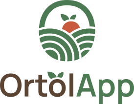

Ready to use
Progetto dimostrativo. Interfaccia mobile basata sul prototipo Figma.
Apri OrtolApp →
Come funziona la demo
- Ogni caricamento della pagina ricomincia dall’onboarding e azzera profilo, carrello, preferiti, carte e ordini. I passaggi interni all’app mantengono i dati.
- Puoi accedere con qualunque email formalmente valida e una password di fantasia. Ad esempio:
remo@example.com e demo. La registrazione permette di impostare nome, cognome e numero di telefono.
- Nessun dato viene inviato a un server. Non ci sono account, ordini, pagamenti o addebiti reali. Il numero completo della carta e il CVV non vengono conservati.
- Da PC compare una cornice ispirata a iPhone 16 Pro, con cursore circolare e scorrimento all’interno dello schermo. Da telefono la cornice scompare.
- Il font, le tre librerie JS e tutti gli elementi grafici necessari sono inclusi.
Percorso di prova
- Scorri l’onboarding e accedi oppure registrati con dati inventati.
- Apri Frutta, cambia il peso di un prodotto e osserva il prezzo. Aggiungilo ai preferiti e al carrello.
- Apri Preferiti, prova una ricerca e aggiungi prodotti fino al minimo d’ordine di 5 €.
- Nel carrello modifica i pesi, elimina una riga e passa alla consegna. Scegli un indirizzo o aggiungine uno.
- Scegli giorno e fascia oraria; inserisci un telefono di fantasia. Sono abilitate solo fasce che iniziano almeno un’ora dopo il momento corrente, nel fuso Europe/Rome.
- Aggiungi una carta simulata:
4242 4242 4242 4242, scadenza 12/30, CVV 123, titolare e nome a piacere. Selezionala nel pagamento.
- Controlla il riepilogo, invia l’ordine e apri “I miei ordini”: lo stato rimane Ricevuto. È possibile annullarlo.
- Aggiungi un altro prodotto al carrello, poi acquista la Weekly Bag dalla home. La box segue un ordine separato e lascia intatto quel carrello.
- Aggiorna la pagina per ripartire con una demo vuota.
Pubblicazione su GitHub Pages
- Crea un repository su GitHub.
- Carica nella radice del repository il contenuto della cartella
sito: index.html, assets, css, js e vendor. Non caricare il RAR al posto dei file.
- Vai in Settings → Pages. In Build and deployment scegli Deploy from a branch.
- Seleziona la branch main e la cartella /(root), poi Save.
- Al termine della pubblicazione GitHub mostrerà il link condivisibile. Aprilo da telefono o PC. Il repository e il sito non sono stati pubblicati automaticamente.
I percorsi delle risorse sono relativi: la demo funziona anche sotto il nome di un repository. Le schermate usano la navigazione tramite hash (#home), senza configurazioni di server o pagine 404 speciali.
Cosa contiene l’archivio
| Cartella / file |
Contenuto |
| sito/ |
Web app completa in HTML, CSS e JavaScript, immagini ottimizzate, font e librerie locali. |
| originali/App-originali.rar |
Il tuo archivio originale, conservato senza modifiche. |
| documentazione/ |
Specifiche, guida al codice, elenco delle librerie e resoconto delle verifiche. |
| LEGGIMI.html |
Questa guida con il pulsante di avvio. |
Librerie incluse
Anime.js 3.2.2 per transizioni, feedback e progresso; Day.js 1.11.13 con UTC, Timezone e lingua italiana per date e fasce orarie; Flatpickr 4.6.13 per il calendario. Tutte distribuite con licenza MIT, inclusa in sito/vendor. Manrope è incluso localmente con licenza SIL Open Font License 1.1.
Le voci Password dimenticata, Notifiche, Privacy e Contattaci rimangono dimostrative e non cliccabili. Non sono implementati disponibilità, gestione commerciale, copertura geografica e altri processi di produzione, come concordato.
Il file Figma non è stato modificato. Prezzi del catalogo indicativi, non un listino aggiornato in tempo reale.